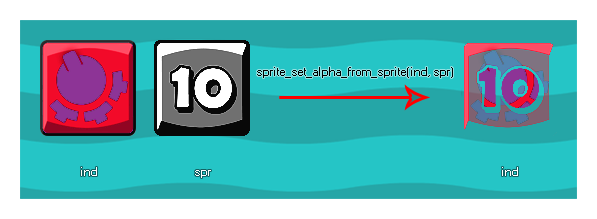

sprite_set_alpha_from_sprite(ind, spr);
| Argument | Description |
|---|---|
| ind | The index of the sprite to change the transparency map of. |
| spr | The index of the sprite to take the transparency map data from. |
Returns: N/A
This function uses the value/saturation of one sprite and multiplies it with the alpha of the target sprite. Ideally the sprite being used to generate the new alpha map should be greyscale, with the white areas having an equivalent alpha value of 1 (opaque), the black areas being equivalent to alpha 0 (transparent), and the grey areas being an alpha in between 0 and 1. The sprite that you are setting the alpha of cannot be a permanent resource, nor can the sprite you use to set the alpha, as this will give an error. This means that you must create two completely new sprites "on the fly" in some way for the function to work correctly. This can be achieved by using surfaces, or by creating a sprite from the screen (the code example below shows how the effect can be achieved with surfaces).
NOTE: This function is only useful for bitmap sprites and will not work with SWF or JSON (Spine) sprites.
Below is an image that illustrates how this function works: 
In this extended example we show how you can create a special effect sprite from two sprite resources. To start with we need to have a controller variable in the Create Event of the instance. This variable is to ensure that the sprite is only created once:
spr_create = true;
Once that is done we need to then go to the Draw Event and add in this code:
if spr_create
{
spr_create = false;
var surf, spr;
surf =
surface_create(sprite_get_width(spr_Explosion_Alpha),
sprite_get_height(spr_Explosion_Alpha));
surface_set_target(surf);
draw_clear_alpha(c_black, 0);
draw_sprite(spr_Gradient, 0, 0, 0);
sprite_index = sprite_create_from_surface(surf,
0, 0, sprite_width, sprite_height, false, false,
sprite_get_xoffset(spr_Gradient),
sprite_get_xoffset(spr_Gradient));
draw_clear_alpha(c_black, 0);
draw_sprite(spr_Explosion_Alpha, 0,
sprite_get_xoffset(spr_Gradient),
sprite_get_xoffset(spr_Gradient));
spr = sprite_create_from_surface(surf, 0, 0,
sprite_width, sprite_height, false, false,
sprite_get_xoffset(spr_Gradient),
sprite_get_xoffset(spr_Gradient));
surface_reset_target();
surface_free(surf);
sprite_set_alpha_from_sprite(sprite_index,
spr);
sprite_delete(spr);
}
draw_sprite(sprite_index, 0, x, y);
The above code first checks to see if the control variable is
true or not, and if it is, it then runs the code to set the sprite
alpha, setting the variable to false to prevent the code from
running more than once. In this case, it creates a surface the size
of the alpha mask that we wish to use, then draws the sprite that
is to have its alpha changed onto the surface and creates a new
sprite from it, assigning it as the sprite_index of the
object. The code then clears the surface and draws the alpha map
sprite to it and creates another new sprite, storing its index in a
local variable. Finally, the new sprite assigned to the object gets
its alpha set from this temporary sprite, the surface is freed and
the temporary sprite is removed.
There is one final thing to do here, and that is remove the sprite
that has been created for the object from memory when not in use.
This would either be done in the Destroy Event or the
Room End Event like this:
sprite_delete(sprite_index);